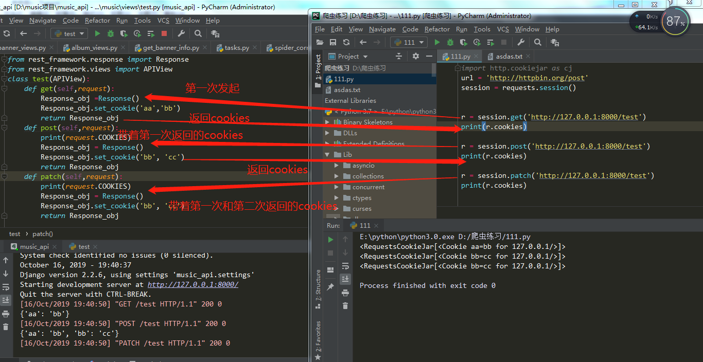
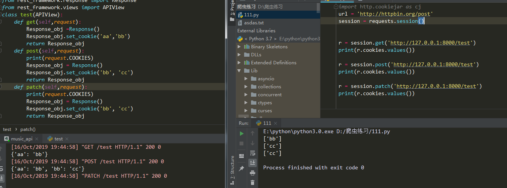
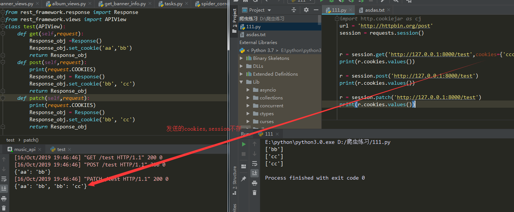
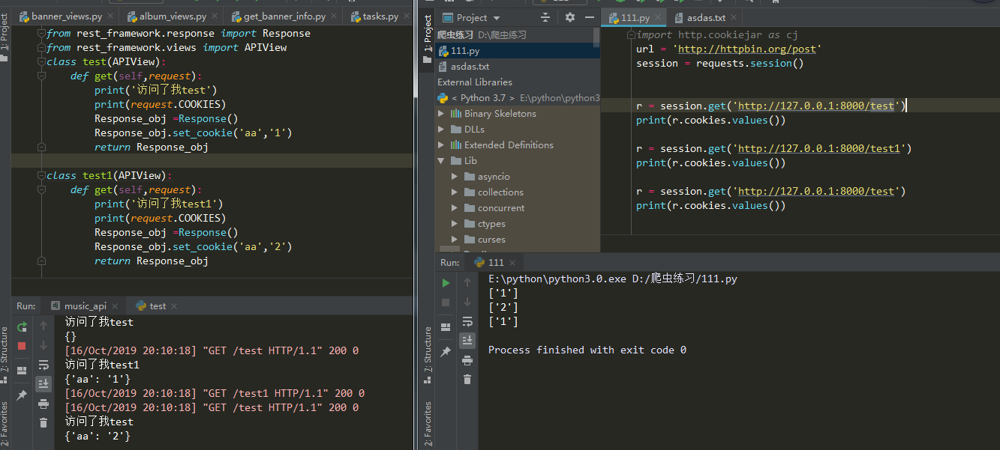

构建一个session对象session = requests.session（）
用构建的session代替requests进行访问他就会自动存啦
import requests
session = requests.session（）
r = session.get(......) #他会存返回的cookies不会存发送的cookies
r = session.post(......) #在请求同一url他会把存的cookies发送过去注意点
原因自己看下面自己看哈,有问题可以私聊我




import requests
from http import cookiejar
session =requests.session()
session.cookies = cookiejar.LWPCookieJar() #MozillaCookieJar或LWPCookieJar。
session.cookies.save(filename='1.txt') //存cookie
session.cookies.load(filename='1.txt') //读cookie
这个参照https://www.cnblogs.com/fu-yong/p/9032902.html
第一次访问
from urllib import request,parse
from http import cookiejar
# 创建filecookiejar实例对象
# 它需要一个参数，既cookie保存的位置
filename = 'cookie.txt'
cookie = cookiejar.FileCookieJar(filename)
# 根据创建的cookie生成cookie的管理器
cookie_handle = request.HTTPCookieProcessor(cookie)
# 创建http请求管理器
http_handle = request.HTTPHandler()
# 创建https管理器
https_handle = request.HTTPSHandler()
# 创建求求管理器，将上面3个管理器作为参数属性
# 有了opener，就可以替代urlopen来获取请求了
opener = request.build_opener(cookie_handle,http_handle,https_handle)
# 登录url，需要从登录form的action属性中获取
url = 'xxxxxxxxxxxxxx'
# 登录所需要的数据，数据为字典形式，
# 此键值需要从form扁担中对应的input的name属性中获取
data = {
'email':'xxxx',
'password':'xxxxx'
}
# 将数据解析成urlencode格式
data = parse.urlencode(data)
req = request.Request(url,data=data)
# 正常是用request.urlopen(),这里用opener.open()发起请求
response = opener.open(req)
# 保存cookie文件
cookie.save()第二次访问
from urllib import request,parse
from http import cookiejar
# 创建cookiejar实例对象
cookie = cookiejar.FileCookieJar()
# 读取已经保存的cookie文件
# 读取之后，就无需登录，直接访问主页即可
cookie.load('cookie.txt')
# 根据创建的cookie生成cookie的管理器
cookie_handle = request.HTTPCookieProcessor(cookie)
# 创建http请求管理器
http_handle = request.HTTPHandler()
# 创建https管理器
https_handle = request.HTTPSHandler()
# 创建求求管理器，将上面3个管理器作为参数属性
# 有了opener，就可以替代urlopen来获取请求了
opener = request.build_opener(cookie_handle,http_handle,https_handle)
url = 'http://xxxxxx'
res = opener.open(url)
html = res.read().decode()
with open('renren.html','w') as f:
f.write(html)